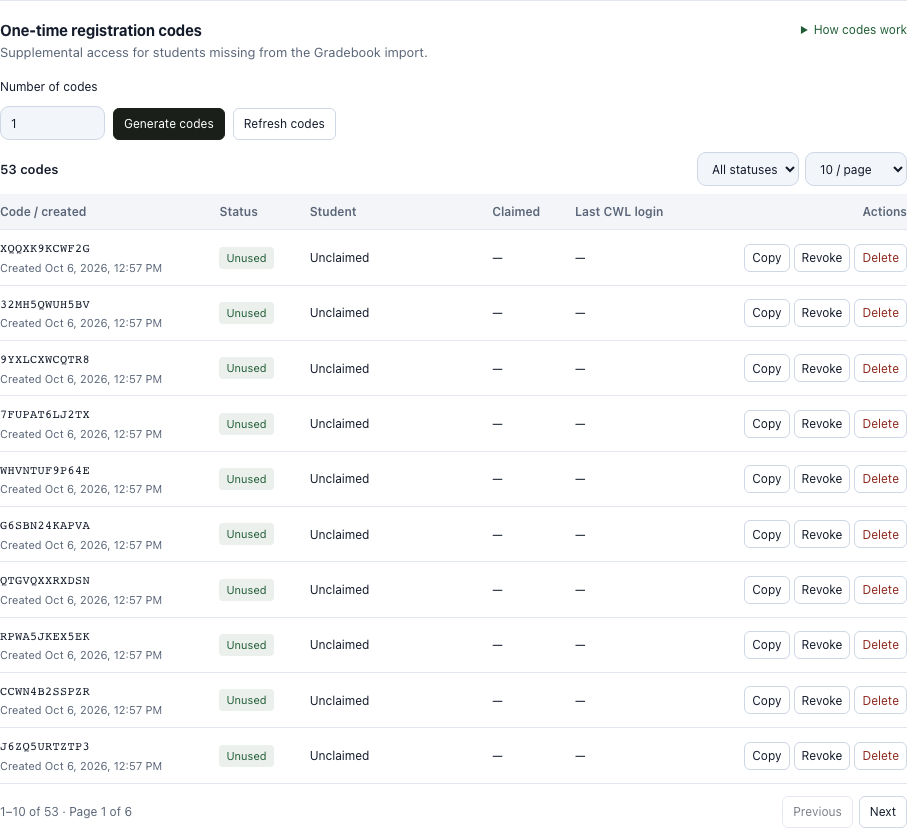
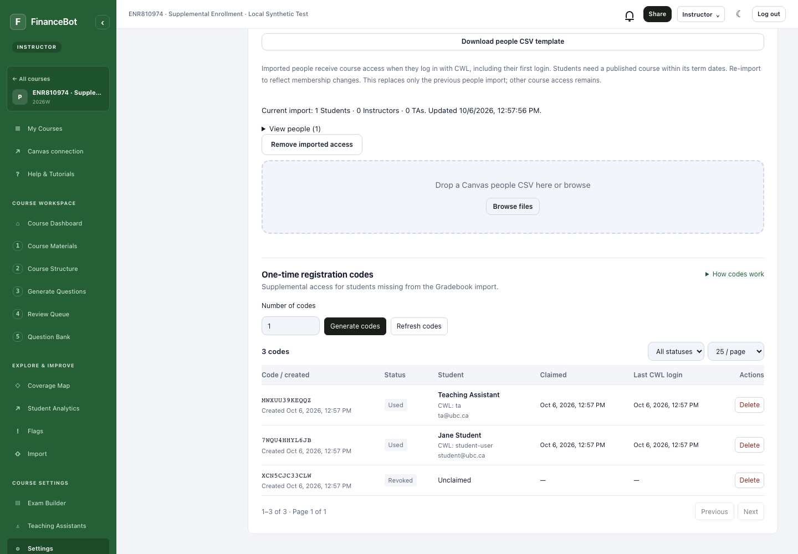
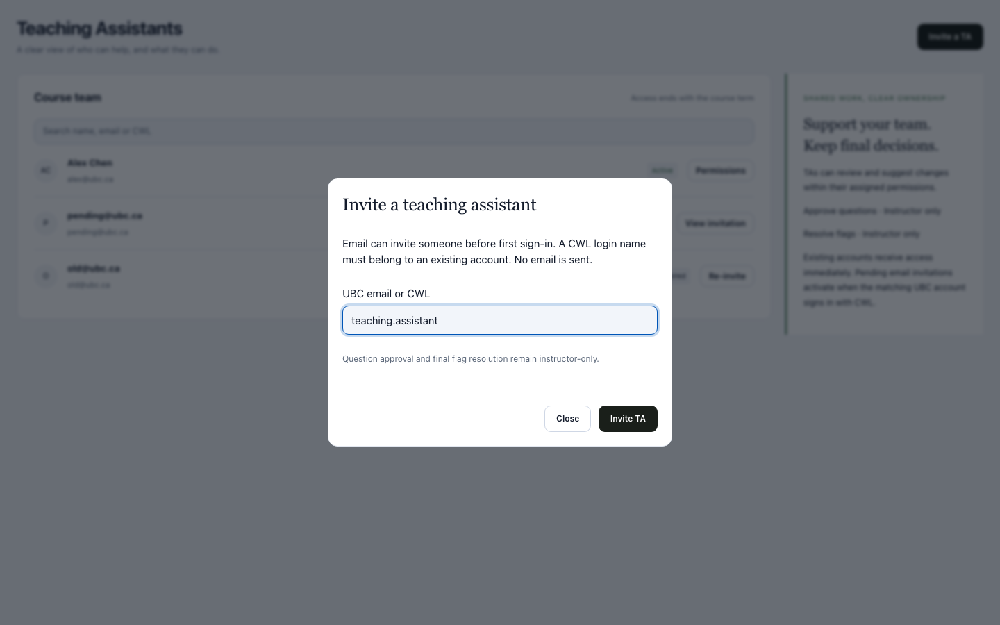
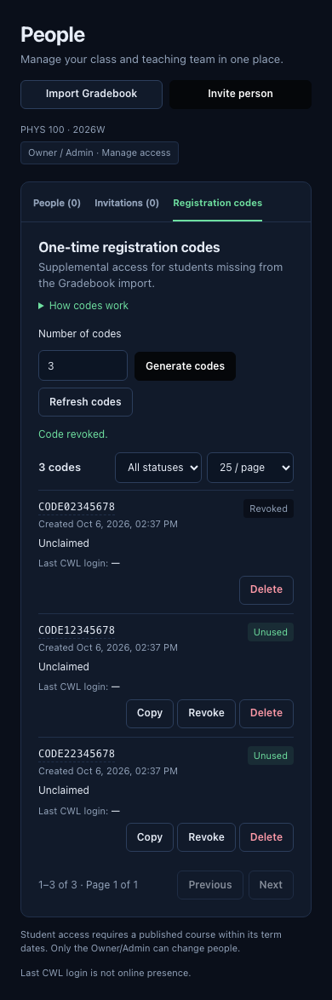

Gradebook first. One-time codes for additional students.
Course Settings → Enrollment now combines Canvas Gradebook imports and optional one-time registration codes. The legacy shared-code/Roster editor has been retired. Existing student access is preserved.
Compact code management
The redesigned table uses smaller type and tighter rows. Identity and timestamps are grouped into columns, with short status badges and expandable help. Use status filters and 10, 25 or 50 rows per page. Pagination is performed by the server and includes all batches.

Delete hides an obsolete record. An unused deleted code cannot enroll anyone; deleting a used record preserves the student's access. Pending enrollment cannot be deleted. Historical claims remain stored for debugging.
What instructors can do
- Import the class through a Canvas Gradebook CSV.
- Generate 1–50 supplemental codes and give one unused code to each additional student.
- Refresh the list to see the claimant's name, CWL, email, claim time and last CWL sign-in.
- Revoke an unused code. This does not remove existing student access.
- Filter code status, move between pages, and delete obsolete records.
Students sign in with CWL and enter the code in My Courses. Codes require a published course within its term dates. The last login timestamp is not an online-status indicator.
Verified against real local services
The following screenshot uses real SAML login, Express endpoints and MongoDB with a temporary synthetic course. Two accounts competed for one code: exactly one succeeded. The other account joined using a second code. Both receipts show their actual local test identity; a third code was revoked.

- A Gradebook-enrolled student did not consume an unused code.
- Replaying a batch request did not create extra codes.
- Used, revoked and legacy shared codes could not register another account.
- Students could not read Instructor-only code receipts.
- Six pages contained 53 distinct records; status filters returned the correct receipts.
- Deleting an unused code invalidated it. Deleting a used receipt preserved enrollment and prevented reuse.
- Enrolled students appeared in the enrollment and analytics membership views.
- TA CWL activation worked; inviting the same account by email reported a duplicate. TA approval and final flag resolution remained denied.
TA email/CWL and responsive layout
Teaching Assistants accepts UBC email or an existing CWL, matching Co-instructors. Existing accounts activate immediately. An unknown UBC email waits for a matching first sign-in; an unknown CWL is rejected. No invitation email is sent.




Implementation notes: supplemental enrollment. This report documents local changes and tests; it does not indicate a production deployment.